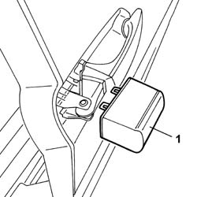
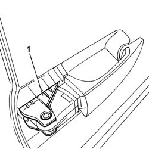
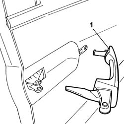

7020D30 SLIDING SIDE DOOR OUTER HANDLE. - R. & R.
- Path
- Procedures > 70 FITTINGS > 7020 LOAD COMPARTMENT DOORS > 7020D SLIDING SIDE DOOR CLOSURE DEVICES > 7020D30 SLIDING SIDE DOOR OUTER HANDLE. - R. & R.
- Kind
- repair procedure (removal / refitting; the operation number is the code)
- Applies to
- all engines; all production periods
- Interactive page
- https://sloeber94.github.io/elrnDB-fUlss/en/#/179007724
Applies to: all engines; all production periods
 Removing
Removing
 Refitting
Refitting- Apply tape around the exterior handle to protect the paint.
1. Use a suitable screwdriver to release the handle retaining cover detent teeth.

Applies to: all engines; all production periods
1. Release the outer handle from the clips fastened to the support.

Applies to: all engines; all production periods
1. Use a screwdriver to prise out the pin integral with the handle from its seat on the mount and remove the exterior handle.

Applies to: all engines; all production periods
Refitting
Removing- Position the exterior handle in its seat and engage to the clips secured to the exterior handle mount.
- Fit the handle fastening cover.
- Remove the protective tape applied previously.